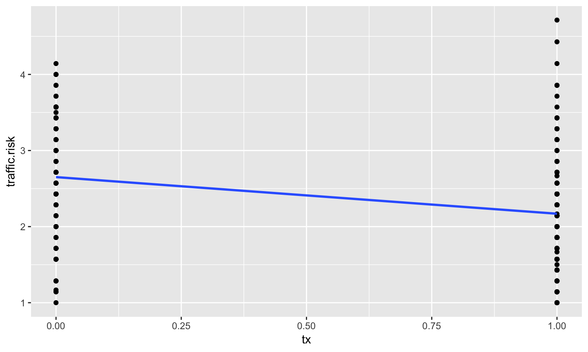
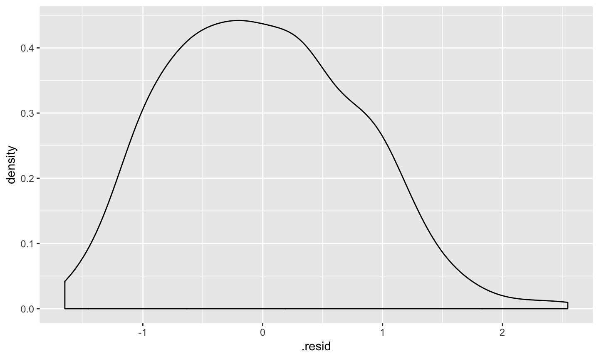

- Thus far you have used t-tests and ANOVA to test basic questions about the world.
- These types of tests can be thought of as a model for how you think “the world works”
- Our DV (hereforth Y) is what we are trying to understand
We hypothesize it has some relationship with your IV(s) (hereforth Xs)
Y = X + E
Models
See this in our R code
Independent samples t-test
t.1 <- t.test(y ~ x, data = d) # y is cont and x is a categoriocal/nominal (dichotomous) factor
One-way ANOVA
a.1 <- aov(y ~ x, data=d) # y is cont and x is a categoriocal/nominal factor
General linear model
- This model (equation) can be very simple as in a treatment/control experiment
- It can be very complex in terms of trying to understand something like academic achievment
- The majority of our models fall under the umbrella of a general(ized) linear model
- All models imply our theory about how the data are generated (ie how the world works)
Regression Equation
\[ Y = b_{0} + b_{1}X +e \]
\[ \hat{Y} = b_{0} + b_{1}X \]
Regression terms
- Y/DV/Outcome/Response/Criterion
- X/IV/Predictor/Explanatory variable
- Regression coeffiecent (weight)/b/b*/\(\beta\)
- Intercept bo/ \(\beta_{0}\)
- Error/Residuals \(e\)
- Predictions \(\hat{Y}\)
Regression models
- These models are a way to convey the relationship between two (or more) variables
- We can use these to get information we may be interested in (e.g. means)
Example
## Parsed with column specification: ## cols( ## id = col_integer(), ## tx = col_integer(), ## traffic.risk = col_double() ## )
- Get this data at my github account: https://github.com/josh-jackson/Psych5067
example.data
## # A tibble: 280 x 3 ## id tx traffic.risk ## <int> <int> <dbl> ## 1 1 1 1.86 ## 2 2 1 1 ## 3 3 1 3.29 ## 4 4 1 2 ## 5 5 1 2.43 ## 6 6 1 3.29 ## 7 7 0 1.17 ## 8 8 0 2.43 ## 9 9 0 3 ## 10 10 1 1.71 ## # ... with 270 more rows
ggplot(example.data) + aes(x = as.factor(tx), y = traffic.risk) + geom_violin() + geom_boxplot()

example
t.1 <- t.test(traffic.risk ~ tx, data = example.data, var.equal = TRUE) t.1
## ## Two Sample t-test ## ## data: traffic.risk by tx ## t = 4.9394, df = 268, p-value = 1.381e-06 ## alternative hypothesis: true difference in means is not equal to 0 ## 95 percent confidence interval: ## 0.2893360 0.6728755 ## sample estimates: ## mean in group 0 mean in group 1 ## 2.650641 2.169535
example
a.1 <- aov(traffic.risk ~ tx, data = example.data) summary(a.1)
## Df Sum Sq Mean Sq F value Pr(>F) ## tx 1 14.8 14.800 24.4 1.38e-06 *** ## Residuals 268 162.6 0.607 ## --- ## Signif. codes: 0 '***' 0.001 '**' 0.01 '*' 0.05 '.' 0.1 ' ' 1 ## 10 observations deleted due to missingness
example
mod.1 <- lm(traffic.risk ~ tx, data = example.data) summary(mod.1)
example
## ## Call: ## lm(formula = traffic.risk ~ tx, data = example.data) ## ## Residuals: ## Min 1Q Median 3Q Max ## -1.65064 -0.59811 -0.02668 0.54475 2.54475 ## ## Coefficients: ## Estimate Std. Error t value Pr(>|t|) ## (Intercept) 2.65064 0.07637 34.707 < 2e-16 *** ## tx -0.48111 0.09740 -4.939 1.38e-06 *** ## --- ## Signif. codes: 0 '***' 0.001 '**' 0.01 '*' 0.05 '.' 0.1 ' ' 1 ## ## Residual standard error: 0.7789 on 268 degrees of freedom ## (10 observations deleted due to missingness) ## Multiple R-squared: 0.08344, Adjusted R-squared: 0.08002 ## F-statistic: 24.4 on 1 and 268 DF, p-value: 1.381e-06
example cont
mod.1 <- lm(traffic.risk ~ tx, data = example.data) anova(mod.1)
## Analysis of Variance Table ## ## Response: traffic.risk ## Df Sum Sq Mean Sq F value Pr(>F) ## tx 1 14.80 14.7999 24.398 1.381e-06 *** ## Residuals 268 162.57 0.6066 ## --- ## Signif. codes: 0 '***' 0.001 '**' 0.01 '*' 0.05 '.' 0.1 ' ' 1
example summary
Same p-values for each test; same SS; same test!
- t-test gives you a t & df (output may give you group mean and SD) - ANOVA gives you an F - linear model (regression) gives you an equation
ANOVA as regression
\[ Y_i = b_{0} + b_{1}X_i + e_i \] \[ T.risk_i = b_{0} + b_{1}TX_i + e_i \]
Each individual has a unique Y value an X value and a residual/error term
The model only has a single \(b_{0}\) and \(b_{1}\) term. These are the regression parameters. \(b_{0}\) is the intercept and \(b_{1}\) quantifies the relationship between your model of the world and the DV.
estimates
## # A tibble: 2 x 5 ## term estimate std.error statistic p.value ## <chr> <dbl> <dbl> <dbl> <dbl> ## 1 (Intercept) 2.65 0.0764 34.7 3.80e-101 ## 2 tx -0.481 0.0974 -4.94 1.38e- 6
example.data %>% group_by(tx) %>% summarise(mean(traffic.risk, na.rm=TRUE))
## # A tibble: 3 x 2 ## tx `mean(traffic.risk, na.rm = TRUE)` ## <int> <dbl> ## 1 0 2.65 ## 2 1 2.17 ## 3 NA 2.29
ggplot(example.data) + aes(x = as.factor(tx), y = traffic.risk) + geom_violin() + geom_boxplot()

## Warning: Removed 10 rows containing non-finite values (stat_smooth).
## Warning: Removed 10 rows containing missing values (geom_point).

Means and estimates
- our test is a test about means (do groups differ?)
- our estimates convey information about the means
- How do the means relate to our estimates within the regression equation?
ANOVA as regression
- Nominal/categorical variables do not have any inherant numbers associated with them
- Need to assign them numbers
- What numbers you assign will impact the equation
ANOVA as regression
\[ Y_i = b_{0} + b_{1}X_i + e_i \]
## # A tibble: 280 x 3 ## id tx traffic.risk ## <int> <int> <dbl> ## 1 1 1 1.86 ## 2 2 1 1 ## 3 3 1 3.29 ## 4 4 1 2 ## 5 5 1 2.43 ## 6 6 1 3.29 ## 7 7 0 1.17 ## 8 8 0 2.43 ## 9 9 0 3 ## 10 10 1 1.71 ## # ... with 270 more rows
library(dplyr) example.data$tx.r <- as.factor(example.data$tx) example.data$tx.r <- recode_factor(example.data$tx.r, "0" = "control", "1" = "treatment")
example.data
## # A tibble: 280 x 4 ## id tx traffic.risk tx.r ## <int> <int> <dbl> <fct> ## 1 1 1 1.86 treatment ## 2 2 1 1 treatment ## 3 3 1 3.29 treatment ## 4 4 1 2 treatment ## 5 5 1 2.43 treatment ## 6 6 1 3.29 treatment ## 7 7 0 1.17 control ## 8 8 0 2.43 control ## 9 9 0 3 control ## 10 10 1 1.71 treatment ## # ... with 270 more rows
class(example.data$tx)
## [1] "integer"
class(example.data$tx.r)
## [1] "factor"
Do you find issues or differences if you use tx vs tx.r?
What about if you did this:
example.data$tx.n <- as.numeric(example.data$tx) class(example.data$tx.n)
## [1] "numeric"
what about if you had different values other than 0 and 1?
- Infinite number of ways to code categorical variables, only a few meaningful ways
- The R default is called “dummy coding”
- Uses 0s and 1s to put numbers to categories
- Changing the numbers changes…?
Effect coding
example.data$tx.effect <- dplyr::recode(example.data$tx.n, "0" = -1, "1" = 1)
example.data
## # A tibble: 280 x 6 ## id tx traffic.risk tx.r tx.n tx.effect ## <int> <int> <dbl> <fct> <dbl> <dbl> ## 1 1 1 1.86 treatment 1 1 ## 2 2 1 1 treatment 1 1 ## 3 3 1 3.29 treatment 1 1 ## 4 4 1 2 treatment 1 1 ## 5 5 1 2.43 treatment 1 1 ## 6 6 1 3.29 treatment 1 1 ## 7 7 0 1.17 control 0 -1 ## 8 8 0 2.43 control 0 -1 ## 9 9 0 3 control 0 -1 ## 10 10 1 1.71 treatment 1 1 ## # ... with 270 more rows
effect coding
mod.1.eff <- lm(traffic.risk ~ tx.effect, data = example.data) tidy(mod.1.eff)
## # A tibble: 2 x 5 ## term estimate std.error statistic p.value ## <chr> <dbl> <dbl> <dbl> <dbl> ## 1 (Intercept) 2.41 0.0487 49.5 8.15e-137 ## 2 tx.effect -0.241 0.0487 -4.94 1.38e- 6
- systematically changes both the intercept and the regression estimate
Interpretations
## # A tibble: 2 x 5 ## term estimate std.error statistic p.value ## <chr> <dbl> <dbl> <dbl> <dbl> ## 1 (Intercept) 2.41 0.0487 49.5 8.15e-137 ## 2 tx.effect -0.241 0.0487 -4.94 1.38e- 6
## # A tibble: 2 x 5 ## term estimate std.error statistic p.value ## <chr> <dbl> <dbl> <dbl> <dbl> ## 1 (Intercept) 2.65 0.0764 34.7 3.80e-101 ## 2 tx -0.481 0.0974 -4.94 1.38e- 6
Intercept: value when your predictor (model, X, IV, etc) is zero
Regression coefficent: one unit increase in X is associated with a (regression estimate) increase in Y
Effect coding
Consists of -1, 1s (And zeros for more than 2 groups)
- The intercept is the “grand mean” or “mean of means” if unbalanced
- The regression coefficient represents the group “effect” ie the difference from the grand mean for the group labeled 1 (we will revisit this when we have more than 2 groups as it will make more sense)
- Common to use for Factorial ANOVA models
Effect coding
Consists of -1, 1s (And zeros for more than 2 groups)
- The intercept is the “grand mean” or “mean of means” if unbalanced
- The regression coefficient represens the group “effect” ie the difference from the grand mean for the group labeled 1 (we will revisit this when we have more than 2 groups as it will make more sense)
Common to use for Factorial ANOVA models
How do you calculate the predicted value of each group?
Effect coding
Thought Qs:
- What happens if you code the groups -.5 and .5?
- What are the pros and potential cons in this type of coding?
Dummy coding
More appropriate when you are interested in comparing to a specific group rather than an “average person”
- Intercept: value of the group coded zero
Regression coefficient: difference between groups (in mean)
How do you calculate the predicted value of each group?
Intermission

Statistical Inference
- The way the world is = our model + error
- How good is our model? Does it “fit” the data well?
- Need to go beyond asking if it is significant, because what does that mean?
- We are going to make predictions and see if the predictions (based on our model) matches our data
Predictions
- predictions \(\hat{Y}\) are of the form of E(Y|X)
- They are created by simpling plugging a persons Xs into the created model
- If you have bs and have Xs you can create a prediction
\(\hat{Y}_{i}\) = 2.6506410 + -0.4811057*\(X_{i}\)
- You have already done this with dummy codes above
Predictions
- We want our predictions to be close to our actual data for each person (\(Y_{i}\))
- The difference between the actual data and our our prediction (\(Y_{i} - \hat{Y}_{i} = e\)) is the residual, how far we are “off”. This tells us how good our fit is.
- You can have the same estimates but completely different fit.
easy to examine with lm objects
coefficients(mod.1) # coefficients residuals(mod.1) # residuals fitted.values(mod.1) # fitted values ie predicted summary(mod.1)$r.squared # R-sq for the model summary(mod.1)$sigma # se of the model
coefficients(mod.1)
## (Intercept) tx ## 2.6506410 -0.4811057
fitted.values(mod.1)
## 1 2 3 4 5 6 7 8 ## 2.169535 2.169535 2.169535 2.169535 2.169535 2.169535 2.650641 2.650641 ## 9 10 11 12 13 14 15 16 ## 2.650641 2.169535 2.169535 2.650641 2.650641 2.650641 2.650641 2.650641 ## 17 18 19 20 22 23 24 25 ## 2.650641 2.650641 2.650641 2.169535 2.169535 2.169535 2.169535 2.169535 ## 26 27 28 29 30 31 32 33 ## 2.650641 2.650641 2.650641 2.650641 2.650641 2.650641 2.650641 2.650641 ## 34 35 36 37 38 39 40 41 ## 2.650641 2.650641 2.650641 2.650641 2.169535 2.169535 2.169535 2.169535 ## 42 43 44 45 46 47 48 49 ## 2.650641 2.169535 2.650641 2.650641 2.169535 2.650641 2.650641 2.650641 ## 55 57 58 59 60 61 62 63 ## 2.169535 2.650641 2.169535 2.169535 2.169535 2.169535 2.169535 2.650641 ## 64 65 66 67 68 69 70 71 ## 2.169535 2.169535 2.169535 2.169535 2.650641 2.169535 2.169535 2.650641 ## 72 73 74 75 76 77 78 79 ## 2.169535 2.169535 2.650641 2.650641 2.169535 2.169535 2.169535 2.169535 ## 80 81 82 83 84 85 86 88 ## 2.169535 2.169535 2.169535 2.169535 2.650641 2.169535 2.169535 2.650641 ## 89 90 91 92 93 94 95 96 ## 2.169535 2.650641 2.650641 2.650641 2.650641 2.169535 2.169535 2.650641 ## 97 98 99 100 101 102 103 104 ## 2.169535 2.169535 2.169535 2.650641 2.169535 2.169535 2.169535 2.169535 ## 105 106 107 108 109 110 111 112 ## 2.169535 2.169535 2.169535 2.169535 2.169535 2.169535 2.169535 2.169535 ## 113 114 115 116 117 118 119 120 ## 2.650641 2.650641 2.650641 2.650641 2.650641 2.650641 2.650641 2.650641 ## 121 122 123 124 125 126 127 128 ## 2.650641 2.650641 2.650641 2.650641 2.650641 2.650641 2.169535 2.650641 ## 129 130 131 132 133 134 135 136 ## 2.650641 2.650641 2.650641 2.169535 2.169535 2.169535 2.169535 2.169535 ## 137 138 139 140 141 142 143 144 ## 2.650641 2.169535 2.169535 2.169535 2.169535 2.169535 2.169535 2.169535 ## 145 146 147 148 149 150 151 152 ## 2.169535 2.169535 2.169535 2.169535 2.169535 2.169535 2.169535 2.169535 ## 153 154 155 156 157 158 159 160 ## 2.169535 2.169535 2.169535 2.169535 2.650641 2.650641 2.650641 2.650641 ## 161 162 163 164 165 166 167 168 ## 2.650641 2.650641 2.169535 2.650641 2.169535 2.169535 2.169535 2.169535 ## 169 170 171 172 173 174 175 176 ## 2.650641 2.169535 2.169535 2.169535 2.169535 2.169535 2.169535 2.169535 ## 177 178 179 180 181 182 183 184 ## 2.169535 2.169535 2.650641 2.650641 2.169535 2.169535 2.169535 2.650641 ## 185 186 187 188 189 190 191 192 ## 2.650641 2.650641 2.169535 2.169535 2.169535 2.169535 2.169535 2.650641 ## 193 194 195 196 197 198 199 200 ## 2.169535 2.169535 2.169535 2.169535 2.169535 2.650641 2.169535 2.169535 ## 201 202 203 204 205 206 207 208 ## 2.169535 2.650641 2.169535 2.169535 2.650641 2.169535 2.169535 2.169535 ## 209 210 211 212 213 214 215 216 ## 2.169535 2.650641 2.169535 2.169535 2.169535 2.169535 2.169535 2.169535 ## 217 218 219 220 221 222 223 224 ## 2.169535 2.169535 2.169535 2.169535 2.169535 2.650641 2.650641 2.169535 ## 225 226 227 228 229 230 231 232 ## 2.169535 2.169535 2.169535 2.169535 2.169535 2.169535 2.650641 2.169535 ## 233 234 235 236 237 238 239 241 ## 2.169535 2.169535 2.169535 2.650641 2.169535 2.169535 2.650641 2.169535 ## 242 243 244 245 246 247 248 249 ## 2.169535 2.650641 2.169535 2.169535 2.169535 2.169535 2.169535 2.650641 ## 250 251 252 253 255 256 257 258 ## 2.650641 2.169535 2.650641 2.169535 2.169535 2.169535 2.169535 2.650641 ## 259 260 261 262 263 264 265 266 ## 2.650641 2.650641 2.169535 2.650641 2.650641 2.169535 2.169535 2.169535 ## 267 268 269 270 271 272 273 274 ## 2.169535 2.169535 2.650641 2.169535 2.169535 2.650641 2.650641 2.650641 ## 275 276 277 278 279 280 ## 2.650641 2.650641 2.650641 2.650641 2.650641 2.650641
residuals(mod.1)
## 1 2 3 4 5 ## -0.312392427 -1.169535284 1.116179002 -0.169535284 0.259036145 ## 6 7 8 9 10 ## 1.116179002 -1.483974359 -0.222069597 0.349358974 -0.455249570 ## 11 12 13 14 15 ## 1.687607573 -0.079212455 0.206501831 0.920787545 1.349358974 ## 16 17 18 19 20 ## 0.349358974 -0.936355312 -1.364926740 -0.364926740 -0.312392427 ## 22 23 24 25 26 ## -0.598106713 -0.026678141 0.116179002 -0.455249570 1.063644688 ## 27 28 29 30 31 ## -0.650641026 -0.079212455 0.206501831 0.777930403 -1.079212455 ## 32 33 34 35 36 ## 0.063644688 -0.507783883 0.777930403 -0.936355312 -1.079212455 ## 37 38 39 40 41 ## -1.079212455 0.116179002 -0.598106713 -0.598106713 0.116179002 ## 42 43 44 45 46 ## 0.635073260 -0.598106713 -0.507783883 0.635073260 0.116179002 ## 47 48 49 55 57 ## -0.793498169 0.635073260 1.349358974 0.830464716 0.492216117 ## 58 59 60 61 62 ## 0.497131383 -0.598106713 -0.312392427 -0.883820998 0.973321859 ## 63 64 65 66 67 ## -0.222069597 -1.169535284 0.259036145 -0.455249570 -0.169535284 ## 68 69 70 71 72 ## -0.079212455 0.544750430 1.259036145 0.920787545 0.830464716 ## 73 74 75 76 77 ## 2.259036145 -0.650641026 -1.650641026 -0.169535284 1.687607573 ## 78 79 80 81 82 ## -1.026678141 0.401893287 0.973321859 -1.026678141 -0.598106713 ## 83 84 85 86 88 ## 0.973321859 0.849358974 -0.598106713 0.973321859 0.777930403 ## 89 90 91 92 93 ## 1.401893287 -1.364926740 -1.079212455 -0.222069597 0.492216117 ## 94 95 96 97 98 ## 1.687607573 -1.026678141 -0.650641026 -0.312392427 -0.312392427 ## 99 100 101 102 103 ## 1.973321859 0.920787545 -1.169535284 0.116179002 -1.026678141 ## 104 105 106 107 108 ## 0.973321859 -0.026678141 -0.598106713 -0.883820998 1.116179002 ## 109 110 111 112 113 ## -0.883820998 -0.169535284 -1.026678141 0.116179002 0.063644688 ## 114 115 116 117 118 ## 0.349358974 0.206501831 0.349358974 1.206501831 0.777930403 ## 119 120 121 122 123 ## 0.777930403 -0.079212455 1.206501831 0.349358974 0.492216117 ## 124 125 126 127 128 ## 0.777930403 -0.650641026 0.206501831 0.544750430 0.920787545 ## 129 130 131 132 133 ## -0.222069597 0.349358974 -0.793498169 0.973321859 -0.026678141 ## 134 135 136 137 138 ## 1.544750430 0.259036145 -0.883820998 -1.079212455 -1.026678141 ## 139 140 141 142 143 ## -0.598106713 -0.169535284 0.259036145 -1.169535284 1.259036145 ## 144 145 146 147 148 ## -0.740963855 -0.169535284 -0.169535284 0.116179002 1.116179002 ## 149 150 151 152 153 ## -0.026678141 -0.502868617 -0.312392427 1.259036145 2.544750430 ## 154 155 156 157 158 ## -1.026678141 0.401893287 0.830464716 0.920787545 -1.507783883 ## 159 160 161 162 163 ## 0.920787545 -1.364926740 -0.222069597 0.063644688 -0.312392427 ## 164 165 166 167 168 ## 0.349358974 0.401893287 -0.883820998 -0.455249570 -0.312392427 ## 169 170 171 172 173 ## 0.349358974 -1.026678141 0.687607573 -0.169535284 1.116179002 ## 174 175 176 177 178 ## 0.116179002 -0.598106713 -0.669535284 0.259036145 -0.455249570 ## 179 180 181 182 183 ## 0.492216117 -0.936355312 -0.598106713 0.687607573 0.401893287 ## 184 185 186 187 188 ## 0.492216117 0.920787545 -0.364926740 -0.026678141 -0.740963855 ## 189 190 191 192 193 ## -0.026678141 -0.026678141 0.259036145 -1.364926740 -0.598106713 ## 194 195 196 197 198 ## -0.598106713 -1.026678141 -1.169535284 -0.002868617 -0.936355312 ## 199 200 201 202 203 ## -0.740963855 0.687607573 -0.598106713 1.349358974 -0.883820998 ## 204 205 206 207 208 ## 0.259036145 -0.364926740 -0.740963855 0.401893287 -0.883820998 ## 209 210 211 212 213 ## -0.312392427 -0.079212455 0.401893287 0.259036145 0.687607573 ## 214 215 216 217 218 ## -0.740963855 -0.598106713 -0.455249570 0.259036145 0.259036145 ## 219 220 221 222 223 ## 0.401893287 -0.740963855 -0.312392427 0.635073260 -1.507783883 ## 224 225 226 227 228 ## -0.598106713 0.973321859 -0.312392427 0.116179002 -0.026678141 ## 229 230 231 232 233 ## 1.259036145 -0.169535284 -1.079212455 0.830464716 -0.883820998 ## 234 235 236 237 238 ## -0.026678141 0.401893287 0.635073260 -0.740963855 0.116179002 ## 239 241 242 243 244 ## -0.793498169 -0.598106713 -0.026678141 1.492216117 0.544750430 ## 245 246 247 248 249 ## 0.544750430 -0.312392427 -0.455249570 -0.455249570 -0.936355312 ## 250 251 252 253 255 ## 0.063644688 0.401893287 -0.650641026 -0.312392427 0.401893287 ## 256 257 258 259 260 ## 0.259036145 -1.026678141 0.777930403 1.063644688 0.063644688 ## 261 262 263 264 265 ## 0.973321859 0.920787545 0.349358974 0.544750430 0.259036145 ## 266 267 268 269 270 ## 0.973321859 -0.455249570 -0.740963855 -0.936355312 -1.169535284 ## 271 272 273 274 275 ## -0.169535284 0.635073260 -0.222069597 -0.222069597 -0.222069597 ## 276 277 278 279 280 ## 0.349358974 -0.364926740 -0.079212455 -0.507783883 -0.079212455
example.data
## # A tibble: 280 x 6 ## id tx traffic.risk tx.r tx.n tx.effect ## <int> <int> <dbl> <fct> <dbl> <dbl> ## 1 1 1 1.86 treatment 1 1 ## 2 2 1 1 treatment 1 1 ## 3 3 1 3.29 treatment 1 1 ## 4 4 1 2 treatment 1 1 ## 5 5 1 2.43 treatment 1 1 ## 6 6 1 3.29 treatment 1 1 ## 7 7 0 1.17 control 0 -1 ## 8 8 0 2.43 control 0 -1 ## 9 9 0 3 control 0 -1 ## 10 10 1 1.71 treatment 1 1 ## # ... with 270 more rows
pop quiz, hotshot
\[ \hat{Y}_{i} = b_{0} + b_{1}X_{i} \]
\[ Y_{i} = b_{0} + b_{1}X_{i} +e_{i} \] \[ Y_{i} - \hat{Y}_{i} = e \]
- can you plug in numbers and calculate subject 3’s predicted and residual scores without explicitly asking for lm object residuals and fitted values?
residuals
ggplot(fit.1.data, aes(.resid)) +
geom_density()

an aside concerning lm objects
lm objects consist of the information embeded in your linear model (ie mod.1). You use this information to get summary(mod.1) or anova(mod.1) as well as additional pieces of information. R handles model objects poorly because you cannot do advanced manipulation with any of this extra information due to them not being in a data frame.
library(broom) fit.1.tidy <- tidy(mod.1) #tidy turns the summary into a dataframe fit.1.tidy
## # A tibble: 2 x 5 ## term estimate std.error statistic p.value ## <chr> <dbl> <dbl> <dbl> <dbl> ## 1 (Intercept) 2.65 0.0764 34.7 3.80e-101 ## 2 tx -0.481 0.0974 -4.94 1.38e- 6
- Augment ammends the original dataset with lm object content. The new variable names of have a “.”" infront of the name to distinguish
fit.1.data <- augment(mod.1) head(fit.1.data)
## # A tibble: 6 x 10 ## .rownames traffic.risk tx .fitted .se.fit .resid .hat .sigma ## <chr> <dbl> <int> <dbl> <dbl> <dbl> <dbl> <dbl> ## 1 1 1.86 1 2.17 0.0605 -0.312 0.00602 0.780 ## 2 2 1 1 2.17 0.0605 -1.17 0.00602 0.777 ## 3 3 3.29 1 2.17 0.0605 1.12 0.00602 0.777 ## 4 4 2 1 2.17 0.0605 -0.170 0.00602 0.780 ## 5 5 2.43 1 2.17 0.0605 0.259 0.00602 0.780 ## 6 6 3.29 1 2.17 0.0605 1.12 0.00602 0.777 ## # ... with 2 more variables: .cooksd <dbl>, .std.resid <dbl>
pop quiz, hotshot, part deux
- how many different predicted values will we have? residuals?
Statistical Inference
In making predictions, we have to compare our prediction to some alternative prediction to see if we are doing well or not.
What is our best guess (ie prediction) if we didn’t collect any data?
\[ \hat{Y} = \bar{Y} \] - Regression can be thought of as: E(Y|X)
Statistical Inference
To the extent that we can generate different predicted values of Y based on the values of the predictors, our model is doing well
Said differently, the closer our model is to the “actual” data generating model, our guesses (Y-hats) will be closer to our actual data (Ys)
Partitioning variation in Y into 3 components
- We formally test how well we are doing with our guesses by partitioning variation
\[ Y = \hat{Y} + e\]
\[ Y = \hat{Y} + (Y - \hat{Y}) \]
\[ Y - \bar{Y} = (\hat{Y} -\bar{Y}) + (Y - \hat{Y}) \]
\[ (Y - \bar{Y})^2 = [(\hat{Y} -\bar{Y}) + (Y - \hat{Y})]^2 \]
\[ \sum (Y - \bar{Y})^2 = \sum (\hat{Y} -\bar{Y})^2 + \sum(Y - \hat{Y})^2 \]
Partitioning the variation in Y
\[ \sum (Y - \bar{Y})^2 = \sum (\hat{Y} -\bar{Y})^2 + \sum(Y - \hat{Y})^2 \]
SS total = SS between + SS within
SS total = SS regression + SS residual (or error)
What can we do with this?
- Last semester you did omnibus F tests
- What hypothesis does the omnibus F test test, generally?
\[ s_{y}^2 = s_{regression}^2 + s_{residual}^2 \]
\[ 1 = \frac{s_{regression}^2}{s_{y}^2} + \frac{s_{residual}^2}{s_{y}^2} \]
Coefficient of Determination
\[ \frac{s_{regression}^2}{s_{y}^2} = \frac{SS_{regression}}{SS_{Y}} = R^2 \]
- percent (of total) variance explained by your model
R squared and Eta squared
summary(mod.1)$r.squared
## [1] 0.08344007
library(lsr) etaSquared(mod.1)
## eta.sq eta.sq.part ## tx 0.08344007 0.08344007
R squared
tidy(anova(mod.1))
## # A tibble: 2 x 6 ## term df sumsq meansq statistic p.value ## <chr> <int> <dbl> <dbl> <dbl> <dbl> ## 1 tx 1 14.8 14.8 24.4 0.00000138 ## 2 Residuals 268 163. 0.607 NA NA
tidy(anova(mod.1.eff))
## # A tibble: 2 x 6 ## term df sumsq meansq statistic p.value ## <chr> <int> <dbl> <dbl> <dbl> <dbl> ## 1 tx.effect 1 14.8 14.8 24.4 0.00000138 ## 2 Residuals 268 163. 0.607 NA NA
summary
- We are using linear models to do the exact same tests as t tests and ANOVAs
- It is the exact same because t-tests and ANOVAs are part of the general linear model
- Looking at these tests through the perspective of a linear model provides us with all the information you got from last semester - and more!
- Plus it provides a more systematic way at 1) building and testing your theoretical model and 2) comparing between alternative theoretical models
- You can get 1) estimates and 2) fit statistics from the model. Both are important.